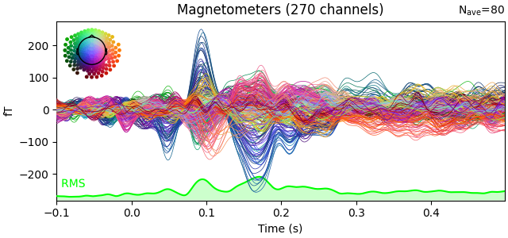
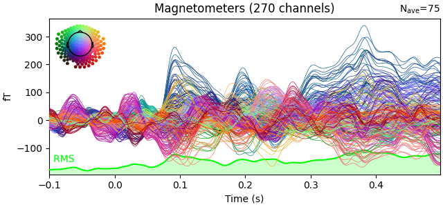
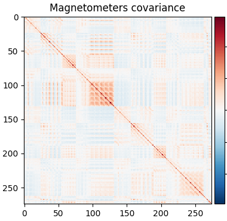
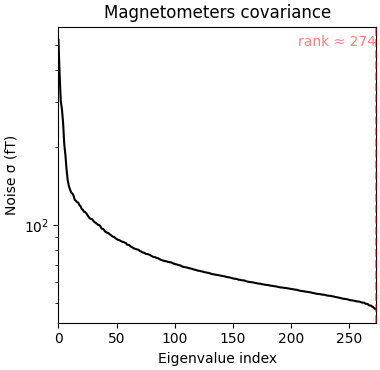

Note
Go to the end to download the full example code.
Working with CTF data: the Brainstorm auditory dataset#
Here we compute the evoked from raw for the auditory Brainstorm tutorial dataset. For comparison, see [1] and the associated brainstorm site.
Experiment:
One subject, 2 acquisition runs 6 minutes each.
Each run contains 200 regular beeps and 40 easy deviant beeps.
Random ISI: between 0.7s and 1.7s seconds, uniformly distributed.
Button pressed when detecting a deviant with the right index finger.
The specifications of this dataset were discussed initially on the FieldTrip bug tracker.
# Authors: Mainak Jas <mainak.jas@telecom-paristech.fr>
# Eric Larson <larson.eric.d@gmail.com>
# Jaakko Leppakangas <jaeilepp@student.jyu.fi>
#
# License: BSD-3-Clause
# Copyright the MNE-Python contributors.
import numpy as np
import pandas as pd
import mne
from mne import combine_evoked
from mne.datasets.brainstorm import bst_auditory
from mne.io import read_raw_ctf
from mne.minimum_norm import apply_inverse
To reduce memory consumption and running time, some of the steps are
precomputed. To run everything from scratch change use_precomputed to
False. With use_precomputed = False running time of this script can
be several minutes even on a fast computer.
use_precomputed = True
The data was collected with a CTF 275 system at 2400 Hz and low-pass
filtered at 600 Hz. Here the data and empty room data files are read to
construct instances of mne.io.Raw.
data_path = bst_auditory.data_path()
subject = "bst_auditory"
subjects_dir = data_path / "subjects"
raw_fname1 = data_path / "MEG" / subject / "S01_AEF_20131218_01.ds"
raw_fname2 = data_path / "MEG" / subject / "S01_AEF_20131218_02.ds"
erm_fname = data_path / "MEG" / subject / "S01_Noise_20131218_01.ds"
In the memory saving mode we use preload=False and use the memory
efficient IO which loads the data on demand. However, filtering and some
other functions require the data to be preloaded into memory.
raw = read_raw_ctf(raw_fname1)
n_times_run1 = raw.n_times
# Here we ignore that these have different device<->head transforms
mne.io.concatenate_raws([raw, read_raw_ctf(raw_fname2)], on_mismatch="ignore")
raw_erm = read_raw_ctf(erm_fname)
ds directory : /home/circleci/mne_data/MNE-brainstorm-data/bst_auditory/MEG/bst_auditory/S01_AEF_20131218_01.ds
res4 data read.
hc data read.
Separate EEG position data file read.
Quaternion matching (desired vs. transformed):
2.51 74.26 0.00 mm <-> 2.51 74.26 -0.00 mm (orig : -56.69 50.20 -264.38 mm) diff = 0.000 mm
-2.51 -74.26 0.00 mm <-> -2.51 -74.26 -0.00 mm (orig : 50.89 -52.31 -265.88 mm) diff = 0.000 mm
108.63 0.00 0.00 mm <-> 108.63 0.00 0.00 mm (orig : 67.41 77.68 -239.53 mm) diff = 0.000 mm
Coordinate transformations established.
Reading digitizer points from ['/home/circleci/mne_data/MNE-brainstorm-data/bst_auditory/MEG/bst_auditory/S01_AEF_20131218_01.ds/S01_20131218_01.pos']...
Polhemus data for 3 HPI coils added
Device coordinate locations for 3 HPI coils added
5 extra points added to Polhemus data.
Measurement info composed.
Finding samples for /home/circleci/mne_data/MNE-brainstorm-data/bst_auditory/MEG/bst_auditory/S01_AEF_20131218_01.ds/S01_AEF_20131218_01.meg4:
System clock channel is available, checking which samples are valid.
360 x 2400 = 864000 samples from 340 chs
Current compensation grade : 3
ds directory : /home/circleci/mne_data/MNE-brainstorm-data/bst_auditory/MEG/bst_auditory/S01_AEF_20131218_02.ds
res4 data read.
hc data read.
Separate EEG position data file read.
Quaternion matching (desired vs. transformed):
2.64 74.60 0.00 mm <-> 2.64 74.60 -0.00 mm (orig : -58.07 49.23 -263.11 mm) diff = 0.000 mm
-2.64 -74.60 0.00 mm <-> -2.64 -74.60 -0.00 mm (orig : 49.94 -53.82 -265.07 mm) diff = 0.000 mm
108.24 0.00 0.00 mm <-> 108.24 -0.00 0.00 mm (orig : 66.67 76.99 -243.39 mm) diff = 0.000 mm
Coordinate transformations established.
Reading digitizer points from ['/home/circleci/mne_data/MNE-brainstorm-data/bst_auditory/MEG/bst_auditory/S01_AEF_20131218_02.ds/S01_20131218_01.pos']...
Polhemus data for 3 HPI coils added
Device coordinate locations for 3 HPI coils added
5 extra points added to Polhemus data.
Measurement info composed.
Finding samples for /home/circleci/mne_data/MNE-brainstorm-data/bst_auditory/MEG/bst_auditory/S01_AEF_20131218_02.ds/S01_AEF_20131218_02.meg4:
System clock channel is available, checking which samples are valid.
360 x 2400 = 864000 samples from 340 chs
Current compensation grade : 3
ds directory : /home/circleci/mne_data/MNE-brainstorm-data/bst_auditory/MEG/bst_auditory/S01_Noise_20131218_01.ds
res4 data read.
hc data read.
Separate EEG position data file read.
Quaternion matching (desired vs. transformed):
0.00 80.00 0.00 mm <-> 0.00 80.00 0.00 mm (orig : -56.57 56.57 -270.00 mm) diff = 0.000 mm
0.00 -80.00 0.00 mm <-> 0.00 -80.00 0.00 mm (orig : 56.57 -56.57 -270.00 mm) diff = 0.000 mm
80.00 0.00 0.00 mm <-> 80.00 0.00 0.00 mm (orig : 56.57 56.57 -270.00 mm) diff = 0.000 mm
Coordinate transformations established.
Polhemus data for 3 HPI coils added
Device coordinate locations for 3 HPI coils added
Measurement info composed.
Finding samples for /home/circleci/mne_data/MNE-brainstorm-data/bst_auditory/MEG/bst_auditory/S01_Noise_20131218_01.ds/S01_Noise_20131218_01.meg4:
System clock channel is available, checking which samples are valid.
15 x 4800 = 72000 samples from 301 chs
Current compensation grade : 3
The data array consists of 274 MEG axial gradiometers, 26 MEG reference sensors and 2 EEG electrodes (Cz and Pz). In addition:
1 stim channel for marking presentation times for the stimuli
1 audio channel for the sent signal
1 response channel for recording the button presses
1 ECG bipolar
2 EOG bipolar (vertical and horizontal)
12 head tracking channels
20 unused channels
Notice also that the digitized electrode positions (stored in a .pos file)
were automatically loaded and added to the Raw object.
The head tracking channels and the unused channels are marked as misc channels. Here we define the EOG and ECG channels.
raw.set_channel_types({"HEOG": "eog", "VEOG": "eog", "ECG": "ecg"})
if not use_precomputed:
# Leave out the two EEG channels for easier computation of forward.
raw.pick(["meg", "stim", "misc", "eog", "ecg"]).load_data()
For noise reduction, a set of bad segments have been identified and stored in csv files. The bad segments are later used to reject epochs that overlap with them. The file for the second run also contains some saccades. The saccades are removed by using SSP. We use pandas to read the data from the csv files. You can also view the files with your favorite text editor.
annotations_df = pd.DataFrame()
offset = n_times_run1
for idx in [1, 2]:
csv_fname = data_path / "MEG" / "bst_auditory" / f"events_bad_0{idx}.csv"
df = pd.read_csv(csv_fname, header=None, names=["onset", "duration", "id", "label"])
print(f"Events from run {idx}:")
print(df)
df["onset"] += offset * (idx - 1)
annotations_df = pd.concat([annotations_df, df], axis=0)
saccades_events = df[df["label"] == "saccade"].values[:, :3].astype(int)
# Conversion from samples to times:
onsets = annotations_df["onset"].values / raw.info["sfreq"]
durations = annotations_df["duration"].values / raw.info["sfreq"]
descriptions = annotations_df["label"].values
annotations = mne.Annotations(onsets, durations, descriptions)
raw.set_annotations(annotations)
del onsets, durations, descriptions
Events from run 1:
onset duration id label
0 7625 2776 1 BAD
1 142459 892 1 BAD
2 216954 460 1 BAD
3 345135 5816 1 BAD
4 357687 1053 1 BAD
5 409101 3736 1 BAD
6 461110 179 1 BAD
7 479866 426 1 BAD
8 764914 11500 1 BAD
9 798174 6589 1 BAD
10 846880 5383 1 BAD
11 858863 5136 1 BAD
Events from run 2:
onset duration id label
0 9 5583 1 BAD
1 9256 3114 1 BAD
2 14287 3456 1 BAD
3 116432 228 1 BAD
4 134489 1329 1 BAD
5 464527 4727 1 BAD
6 494136 4519 1 BAD
7 749288 189 1 BAD
8 788623 7937 1 BAD
9 21179 0 1 saccade
10 72993 0 1 saccade
11 134527 0 1 saccade
12 196555 0 1 saccade
13 249894 0 1 saccade
14 343357 0 1 saccade
15 400771 0 1 saccade
16 450256 0 1 saccade
17 593101 0 1 saccade
18 733942 0 1 saccade
19 765939 0 1 saccade
20 789476 0 1 saccade
21 792852 0 1 saccade
22 833208 0 1 saccade
23 859869 0 1 saccade
24 862888 0 1 saccade
Here we compute the saccade and EOG projectors for magnetometers and add them to the raw data. The projectors are added to both runs.
saccade_epochs = mne.Epochs(
raw,
saccades_events,
1,
0.0,
0.5,
preload=True,
baseline=(None, None),
reject_by_annotation=False,
)
projs_saccade = mne.compute_proj_epochs(
saccade_epochs, n_mag=1, n_eeg=0, desc_prefix="saccade"
)
if use_precomputed:
proj_fname = data_path / "MEG" / "bst_auditory" / "bst_auditory-eog-proj.fif"
projs_eog = mne.read_proj(proj_fname)[0]
else:
projs_eog, _ = mne.preprocessing.compute_proj_eog(raw.load_data(), n_mag=1, n_eeg=0)
raw.add_proj(projs_saccade)
raw.add_proj(projs_eog)
del saccade_epochs, saccades_events, projs_eog, projs_saccade # To save memory
Not setting metadata
16 matching events found
Setting baseline interval to [0.0, 0.5] s
Applying baseline correction (mode: mean)
0 projection items activated
Loading data for 16 events and 1201 original time points ...
1 bad epochs dropped
No channels 'grad' found. Skipping.
Adding projection: axial-saccade-PCA-01 (exp var=38.1%)
Read a total of 1 projection items:
EOG-axial-998--0.200-0.200-PCA-01 (1 x 274) idle
1 projection items deactivated
1 projection items deactivated
Visually inspect the effects of projections. Click on ‘proj’ button at the bottom right corner to toggle the projectors on/off. EOG events can be plotted by adding the event list as a keyword argument. As the bad segments and saccades were added as annotations to the raw data, they are plotted as well.
raw.plot()
Using qt as 2D backend.
Typical preprocessing step is the removal of power line artifact (50 Hz or 60 Hz). Here we notch filter the data at 60, 120 and 180 to remove the original 60 Hz artifact and the harmonics. The power spectra are plotted before and after the filtering to show the effect. The drop after 600 Hz appears because the data was filtered during the acquisition. In memory saving mode we do the filtering at evoked stage, which is not something you usually would do.
if not use_precomputed:
raw.compute_psd(tmax=np.inf, picks="meg").plot(
picks="data", exclude="bads", amplitude=False
)
notches = np.arange(60, 181, 60)
raw.notch_filter(notches, phase="zero-double", fir_design="firwin2")
raw.compute_psd(tmax=np.inf, picks="meg").plot(
picks="data", exclude="bads", amplitude=False
)
We also lowpass filter the data at 100 Hz to remove the hf components.
if not use_precomputed:
raw.filter(
None,
100.0,
h_trans_bandwidth=0.5,
filter_length="10s",
phase="zero-double",
fir_design="firwin2",
)
Epoching and averaging. First some parameters are defined and events extracted from the stimulus channel (UPPT001). The rejection thresholds are defined as peak-to-peak values and are in T / m for gradiometers, T for magnetometers and V for EOG and EEG channels.
480 events found on stim channel UPPT001
Event IDs: [1 2]
The event timing is adjusted by comparing the trigger times on detected sound onsets on channel UADC001-4408.
sound_data = raw[raw.ch_names.index("UADC001-4408")][0][0]
onsets = np.where(np.abs(sound_data) > 2.0 * np.std(sound_data))[0]
min_diff = int(0.5 * raw.info["sfreq"])
diffs = np.concatenate([[min_diff + 1], np.diff(onsets)])
onsets = onsets[diffs > min_diff]
assert len(onsets) == len(events)
diffs = 1000.0 * (events[:, 0] - onsets) / raw.info["sfreq"]
print(f"Trigger delay removed (μ ± σ): {np.mean(diffs):0.1f} ± {np.std(diffs):0.1f} ms")
events[:, 0] = onsets
del sound_data, diffs
Trigger delay removed (μ ± σ): -14.0 ± 0.3 ms
We mark a set of bad channels that seem noisier than others. This can also
be done interactively with raw.plot by clicking the channel name
(or the line). The marked channels are added as bad when the browser window
is closed.
raw.info["bads"] = ["MLO52-4408", "MRT51-4408", "MLO42-4408", "MLO43-4408"]
The epochs (trials) are created for MEG channels. First we find the picks
for MEG and EOG channels. Then the epochs are constructed using these picks.
The epochs overlapping with annotated bad segments are also rejected by
default. To turn off rejection by bad segments (as was done earlier with
saccades) you can use keyword reject_by_annotation=False.
Not setting metadata
480 matching events found
Setting baseline interval to [-0.1, 0.0] s
Applying baseline correction (mode: mean)
Created an SSP operator (subspace dimension = 2)
2 projection items activated
We only use first 40 good epochs from each run. Since we first drop the bad epochs, the indices of the epochs are no longer same as in the original epochs collection. Investigation of the event timings reveals that first epoch from the second run corresponds to index 182.
epochs.drop_bad()
# avoid warning about concatenating with annotations
epochs.set_annotations(None)
epochs_standard = mne.concatenate_epochs(
[epochs["standard"][range(40)], epochs["standard"][182:222]]
)
epochs_standard.load_data() # Resampling to save memory.
epochs_standard.resample(600, npad="auto")
epochs_deviant = epochs["deviant"].load_data()
epochs_deviant.resample(600, npad="auto")
del epochs
Loading data for 480 events and 1441 original time points ...
Rejecting epoch based on EOG : ['VEOG']
Rejecting epoch based on EOG : ['VEOG']
Rejecting epoch based on EOG : ['VEOG']
Rejecting epoch based on EOG : ['VEOG']
Rejecting epoch based on MAG : ['MLP52-4408']
Rejecting epoch based on EOG : ['VEOG']
Rejecting epoch based on EOG : ['VEOG']
Rejecting epoch based on EOG : ['HEOG']
Rejecting epoch based on EOG : ['HEOG']
Rejecting epoch based on EOG : ['VEOG']
Rejecting epoch based on MAG : ['MLP52-4408']
Rejecting epoch based on EOG : ['VEOG']
Rejecting epoch based on EOG : ['VEOG']
Rejecting epoch based on EOG : ['VEOG']
Rejecting epoch based on EOG : ['VEOG']
Rejecting epoch based on EOG : ['HEOG']
Rejecting epoch based on EOG : ['VEOG']
Rejecting epoch based on EOG : ['VEOG']
Rejecting epoch based on EOG : ['HEOG']
Rejecting epoch based on EOG : ['HEOG']
Rejecting epoch based on EOG : ['VEOG']
Rejecting epoch based on EOG : ['VEOG']
Rejecting epoch based on EOG : ['HEOG']
Rejecting epoch based on EOG : ['HEOG']
Rejecting epoch based on EOG : ['VEOG']
Rejecting epoch based on EOG : ['HEOG']
Rejecting epoch based on EOG : ['VEOG']
Rejecting epoch based on EOG : ['VEOG']
40 bad epochs dropped
Loading data for 40 events and 1441 original time points ...
Loading data for 40 events and 1441 original time points ...
Not setting metadata
80 matching events found
Applying baseline correction (mode: mean)
Created an SSP operator (subspace dimension = 2)
Loading data for 75 events and 1441 original time points ...
The averages for each conditions are computed.
evoked_std = epochs_standard.average()
evoked_dev = epochs_deviant.average()
del epochs_standard, epochs_deviant
Typical preprocessing step is the removal of power line artifact (50 Hz or
60 Hz). Here we lowpass filter the data at 40 Hz, which will remove all
line artifacts (and high frequency information). Normally this would be done
to raw data (with mne.io.Raw.filter()), but to reduce memory
consumption of this tutorial, we do it at evoked stage. (At the raw stage,
you could alternatively notch filter with mne.io.Raw.notch_filter().)
for evoked in (evoked_std, evoked_dev):
evoked.filter(l_freq=None, h_freq=40.0, fir_design="firwin")
Setting up low-pass filter at 40 Hz
FIR filter parameters
---------------------
Designing a one-pass, zero-phase, non-causal lowpass filter:
- Windowed time-domain design (firwin) method
- Hamming window with 0.0194 passband ripple and 53 dB stopband attenuation
- Upper passband edge: 40.00 Hz
- Upper transition bandwidth: 10.00 Hz (-6 dB cutoff frequency: 45.00 Hz)
- Filter length: 199 samples (0.332 s)
[Parallel(n_jobs=1)]: Done 17 tasks | elapsed: 0.0s
[Parallel(n_jobs=1)]: Done 71 tasks | elapsed: 0.0s
[Parallel(n_jobs=1)]: Done 161 tasks | elapsed: 0.0s
[Parallel(n_jobs=1)]: Done 287 tasks | elapsed: 0.0s
Setting up low-pass filter at 40 Hz
FIR filter parameters
---------------------
Designing a one-pass, zero-phase, non-causal lowpass filter:
- Windowed time-domain design (firwin) method
- Hamming window with 0.0194 passband ripple and 53 dB stopband attenuation
- Upper passband edge: 40.00 Hz
- Upper transition bandwidth: 10.00 Hz (-6 dB cutoff frequency: 45.00 Hz)
- Filter length: 199 samples (0.332 s)
[Parallel(n_jobs=1)]: Done 17 tasks | elapsed: 0.0s
[Parallel(n_jobs=1)]: Done 71 tasks | elapsed: 0.0s
[Parallel(n_jobs=1)]: Done 161 tasks | elapsed: 0.0s
[Parallel(n_jobs=1)]: Done 287 tasks | elapsed: 0.0s
Here we plot the ERF of standard and deviant conditions. In both conditions we can see the P50 and N100 responses. The mismatch negativity is visible only in the deviant condition around 100-200 ms. P200 is also visible around 170 ms in both conditions but much stronger in the standard condition. P300 is visible in deviant condition only (decision making in preparation of the button press). You can view the topographies from a certain time span by painting an area with clicking and holding the left mouse button.
evoked_std.plot(window_title="Standard", gfp=True, time_unit="s")
evoked_dev.plot(window_title="Deviant", gfp=True, time_unit="s")
- 
- 
Removing 5 compensators from info because not all compensation channels were picked.
Removing 5 compensators from info because not all compensation channels were picked.
Removing 5 compensators from info because not all compensation channels were picked.
Removing 5 compensators from info because not all compensation channels were picked.
Removing 5 compensators from info because not all compensation channels were picked.
Removing 5 compensators from info because not all compensation channels were picked.
Show activations as topography figures.
times = np.arange(0.05, 0.301, 0.025)
fig = evoked_std.plot_topomap(times=times)
fig.suptitle("Standard")
fig = evoked_dev.plot_topomap(times=times)
fig.suptitle("Deviant")
We can see the MMN effect more clearly by looking at the difference between the two conditions. P50 and N100 are no longer visible, but MMN/P200 and P300 are emphasised.
evoked_difference = combine_evoked([evoked_dev, evoked_std], weights=[1, -1])
evoked_difference.plot(window_title="Difference", gfp=True, time_unit="s")
Removing 5 compensators from info because not all compensation channels were picked.
Removing 5 compensators from info because not all compensation channels were picked.
Removing 5 compensators from info because not all compensation channels were picked.
Source estimation. We compute the noise covariance matrix from the empty room measurement and use it for the other runs.
- 
- 
Using up to 150 segments
Number of samples used : 72000
[done]
Removing 5 compensators from info because not all compensation channels were picked.
Computing rank from covariance with rank=None
Using tolerance 1.7e-14 (2.2e-16 eps * 274 dim * 0.27 max singular value)
Estimated rank (mag): 274
MAG: rank 274 computed from 274 data channels with 0 projectors
The transformation is read from a file:
trans_fname = data_path / "MEG" / "bst_auditory" / "bst_auditory-trans.fif"
trans = mne.read_trans(trans_fname)
To save time and memory, the forward solution is read from a file. Set
use_precomputed=False in the beginning of this script to build the
forward solution from scratch. The head surfaces for constructing a BEM
solution are read from a file. Since the data only contains MEG channels, we
only need the inner skull surface for making the forward solution. For more
information: Cortical surface reconstruction with FreeSurfer, mne.setup_source_space(),
The Boundary Element Model (BEM), mne.bem.make_watershed_bem().
if use_precomputed:
fwd_fname = data_path / "MEG" / "bst_auditory" / "bst_auditory-meg-oct-6-fwd.fif"
fwd = mne.read_forward_solution(fwd_fname)
else:
src = mne.setup_source_space(
subject, spacing="ico4", subjects_dir=subjects_dir, overwrite=True
)
model = mne.make_bem_model(
subject=subject, ico=4, conductivity=[0.3], subjects_dir=subjects_dir
)
bem = mne.make_bem_solution(model)
fwd = mne.make_forward_solution(evoked_std.info, trans=trans, src=src, bem=bem)
inv = mne.minimum_norm.make_inverse_operator(evoked_std.info, fwd, cov)
snr = 3.0
lambda2 = 1.0 / snr**2
del fwd
Reading forward solution from /home/circleci/mne_data/MNE-brainstorm-data/bst_auditory/MEG/bst_auditory/bst_auditory-meg-oct-6-fwd.fif...
Reading a source space...
Computing patch statistics...
Patch information added...
Distance information added...
[done]
Reading a source space...
Computing patch statistics...
Patch information added...
Distance information added...
[done]
2 source spaces read
Desired named matrix (kind = 3523 (FIFF_MNE_FORWARD_SOLUTION_GRAD)) not available
Read MEG forward solution (8196 sources, 270 channels, free orientations)
Source spaces transformed to the forward solution coordinate frame
Converting forward solution to surface orientation
Average patch normals will be employed in the rotation to the local surface coordinates....
Converting to surface-based source orientations...
[done]
info["bads"] and noise_cov["bads"] do not match, excluding bad channels from both
Computing inverse operator with 270 channels.
270 out of 270 channels remain after picking
Removing 5 compensators from info because not all compensation channels were picked.
Selected 270 channels
Creating the depth weighting matrix...
270 magnetometer or axial gradiometer channels
limit = 8033/8196 = 10.015871
scale = 6.10585e-11 exp = 0.8
Applying loose dipole orientations to surface source spaces: 0.2
Whitening the forward solution.
Removing 5 compensators from info because not all compensation channels were picked.
Created an SSP operator (subspace dimension = 2)
Computing rank from covariance with rank=None
Using tolerance 9.8e-15 (2.2e-16 eps * 270 dim * 0.16 max singular value)
Estimated rank (mag): 268
MAG: rank 268 computed from 270 data channels with 2 projectors
Setting small MAG eigenvalues to zero (without PCA)
Creating the source covariance matrix
Adjusting source covariance matrix.
Computing SVD of whitened and weighted lead field matrix.
largest singular value = 8.09843
scaling factor to adjust the trace = 3.11765e+19 (nchan = 270 nzero = 2)
The sources are computed using dSPM method and plotted on an inflated brain
surface. For interactive controls over the image, use keyword
time_viewer=True.
Standard condition.
stc_standard = mne.minimum_norm.apply_inverse(evoked_std, inv, lambda2, "dSPM")
brain = stc_standard.plot(
subjects_dir=subjects_dir,
subject=subject,
surface="inflated",
time_viewer=False,
hemi="lh",
initial_time=0.1,
time_unit="s",
)
del stc_standard, brain
Removing 5 compensators from info because not all compensation channels were picked.
Preparing the inverse operator for use...
Scaled noise and source covariance from nave = 1 to nave = 80
Created the regularized inverter
Created an SSP operator (subspace dimension = 2)
Created the whitener using a noise covariance matrix with rank 268 (2 small eigenvalues omitted)
Computing noise-normalization factors (dSPM)...
[done]
Applying inverse operator to "standard"...
Picked 270 channels from the data
Computing inverse...
Eigenleads need to be weighted ...
Computing residual...
Explained 97.0% variance
Combining the current components...
dSPM...
[done]
Using control points [ 4.80289065 5.69025561 15.89954825]
Deviant condition.
stc_deviant = mne.minimum_norm.apply_inverse(evoked_dev, inv, lambda2, "dSPM")
brain = stc_deviant.plot(
subjects_dir=subjects_dir,
subject=subject,
surface="inflated",
time_viewer=False,
hemi="lh",
initial_time=0.1,
time_unit="s",
)
del stc_deviant, brain
Removing 5 compensators from info because not all compensation channels were picked.
Preparing the inverse operator for use...
Scaled noise and source covariance from nave = 1 to nave = 75
Created the regularized inverter
Created an SSP operator (subspace dimension = 2)
Created the whitener using a noise covariance matrix with rank 268 (2 small eigenvalues omitted)
Computing noise-normalization factors (dSPM)...
[done]
Applying inverse operator to "deviant"...
Picked 270 channels from the data
Computing inverse...
Eigenleads need to be weighted ...
Computing residual...
Explained 98.2% variance
Combining the current components...
dSPM...
[done]
Using control points [ 7.12814543 8.29154718 18.6203076 ]
Difference.
stc_difference = apply_inverse(evoked_difference, inv, lambda2, "dSPM")
brain = stc_difference.plot(
subjects_dir=subjects_dir,
subject=subject,
surface="inflated",
time_viewer=False,
hemi="lh",
initial_time=0.15,
time_unit="s",
)
Removing 5 compensators from info because not all compensation channels were picked.
Preparing the inverse operator for use...
Scaled noise and source covariance from nave = 1 to nave = 38
Created the regularized inverter
Created an SSP operator (subspace dimension = 2)
Created the whitener using a noise covariance matrix with rank 268 (2 small eigenvalues omitted)
Computing noise-normalization factors (dSPM)...
[done]
Applying inverse operator to "deviant - standard"...
Picked 270 channels from the data
Computing inverse...
Eigenleads need to be weighted ...
Computing residual...
Explained 97.2% variance
Combining the current components...
dSPM...
[done]
Using control points [ 4.96162575 5.78319301 14.94351171]
References#
Total running time of the script: (0 minutes 34.385 seconds)